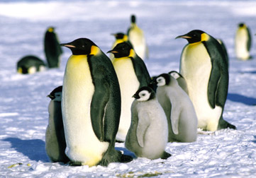
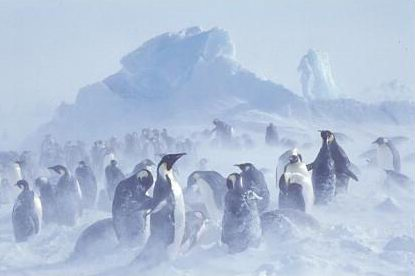
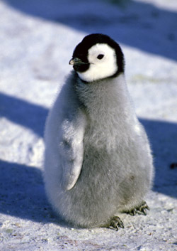

Kaiserpinguine

Der Kaiserpinguin kann bis zu 130 cm groß werden und bis zu 50 kg wiegen.

Der Kaiserpinguin ist ein Überlebenskünstler
Die Küken schlüpfen im antaktischen Winter ab Mitte Juli.
Sie tragen einen feinen grauen Flaum. Ihr Köpfchen ist schwarz,
und rund um die Augen haben sie einen weißen Ring.
